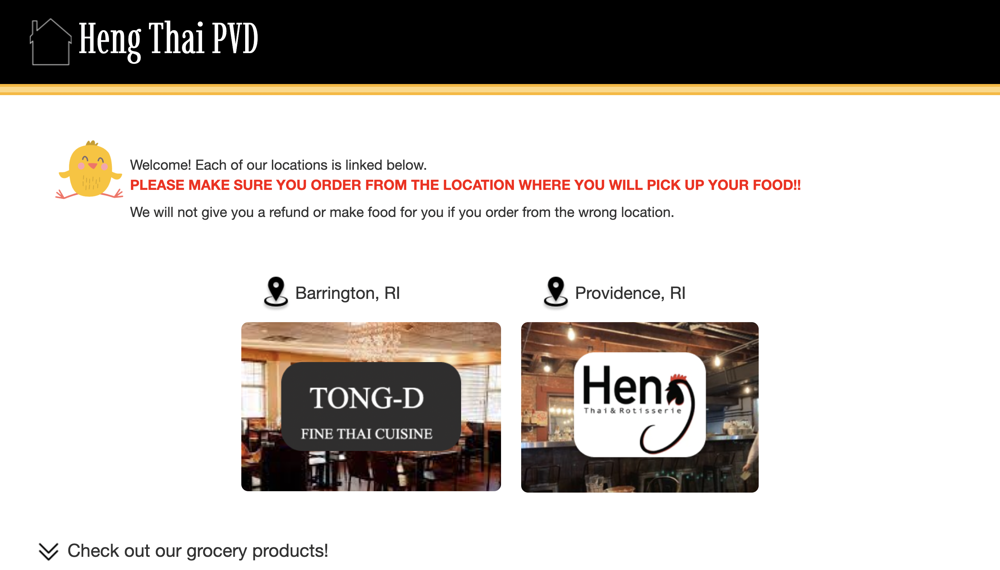

Heng Thai Rotisserie Website
Responsive Redesign
October 2022 - CSCI1300 - HTML/CSS
Introduction
The aim of this project was to identify a website with usability problems, redesign it, and develop a new
responsive website with HTML/CSS to address the issues identified in the original website. This project focused on making the
wesbite adaptable to the majority of device screen sizes, people who may have lower visibility, and different hosting
platforms which may have different fonts and symbols available.
Part 1: Identifying Usability Problems
I chose to redesign the website for Heng Thai. While browsing websites for nearby restaurants, I noticed
that this one was especially confusing and unpolished. When you first go to the webpage, you can click on
one of the two locations to be redirected to the menu & ordering for that location. The text at the top,
however, states that "there are three links for each location", which is confusing.
As we continue to scroll down, there is a random advertisement for Heng's oyster sauce (with no link to buy
it), and a series of vertically arranged youtube cooking videos which make use of this sauce. To actually order
the product, I would have to navigate to one of the sites and then find the sauce under the "product" tab in
the navigation bar. This could confusing to someone using the website and is also poor marketing.
I also used the WebAIM Wave software to assess the website. Among the errors noted by WebAIM Wave are very low contrast, very small text, and lack of alternative text.
I agree that the visual color contrast is not very good, and there's nowhere that the eye naturally jumps to.
That can also partially be attributed to small text and lack of headers, which was also noted by WebAIM Wave.

Visit original Heng Thai website >
Part 2: Visual Redesign

My Visual Design Style Guide
I decided to use the original color scheme and icons from the website, in order to keep with their theme. I also thought
they had a good concept, it could just be executed better. I rounded out the buttons to make them seem more "clickable", and
added a honey yellow accent color to make the website more lively.
LOW FIDELITY WIREFRAMES


In the lo fi wireframes, I worked on incorporating all of the elements of the original site while making the site much more
learnable. I made large colorful containers for the two locations, so the eyes were drawn to this, the main point
of the page. I also added more icons and suggestions of what different parts of the page are for, including explaining
the part where they show videos and advertise their products.
In the hi fi wireframes, I continued to alter the design, adding many more images of the food from Heng. I found that
without the pictures the website was a little one dimensional and did not make the user feel hungry or pulled in.
I also added some color to draw the eye to the warning at the top of the screen.
Part 3: Responsive Redesign

Visit my redesigned website >
Here is the final iteration, created with HTML and CSS! I found that bringing my design to life was much harder than I anticipated, but overall
I felt like this reactive site was pretty true to my hi fi prototype!
Takeaways
Through this project, I learned practices in HTML/CSS that are more accessible and can be used by a much larger variety of
people, which is a super important skill in design. I also got the chance to go through the design process and create
many iterations until I got to one, clean final design.